Tutorial: Simulate stresses on a bridge
In this tutorial, you explore how a load applied to a bridge will affect its structure.
-
Open FE_Bridge.asm.
Simulation models are delivered in the \Program Files\Siemens\Solid Edge 2023\Training\Simulation folder.
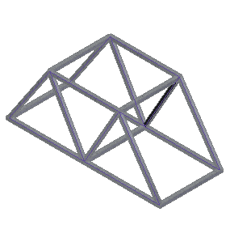
-
Open the Frame environment: Select Tools tab→Environs group→Frame
 .
. -
Create a structural frameworks analysis study.
-
Select the Simulation tab→Study group→New Study command.

-
Choose the Linear Static study type and Beam mesh type, and then click the Options button.
-
Under Results Options, in the Nodal section, select Beam end reactions.
-
Click OK to close the Create Study dialog box.
-
-
The Define command in the Geometry group is active. Select the bridge frame.
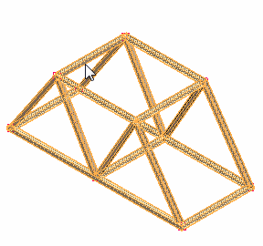
-
Accept the frame.
The blue curves represent beam curves.
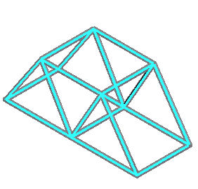
-
Define a force on the top beams.
-
Select the Simulation tab→Structural Loads group→Force command.

-
On the command bar, change the selection filter to Curve.
-
Select the four beams on the top of the frame.
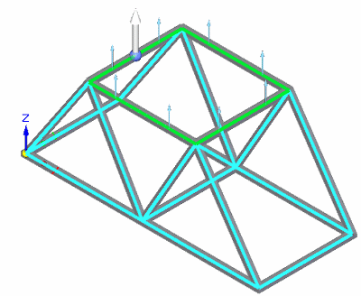
-
The default force direction vector points up. Select the Flip Direction button
 to change the force direction so that it points down onto the frame.
to change the force direction so that it points down onto the frame. 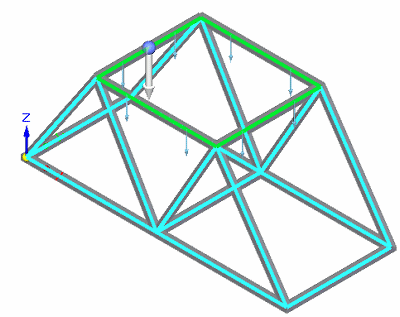
-
Type 100 kN in the value box. This is equal to a 22481 pound force load.
-
Right-click to accept and click to finish.
The force is placed.
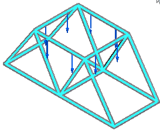
-
-
Add a fixed constraint to the base of the frame.
-
Select the Simulation tab→Constraints group→Fixed command.
-
On the command bar, change the selection filter to Node.
-
Select the beams shown below, near the end points closest to joints. When you are finished, you should see constraint nodes at the six beam joints along the base of the frame.
When using the Nodes filter, click along a beam and the closest end is selected.
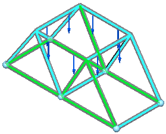
-
Right-click to accept, and then click to finish.
You can use the Symbol Size/Spacing button
 on the command bar to increase the constraint symbol size so they are easier to see.
on the command bar to increase the constraint symbol size so they are easier to see.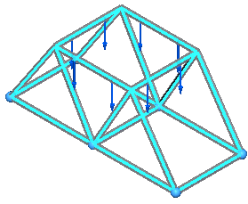
-
In the Simulation pane, turn off loads and constraints.
-
-
Mesh the frame.
-
Select the Mesh command, and on the Mesh command bar, use the slider to define a subjective mesh size of 3 or 4.
-
Click the Mesh button.
The entire assembly is meshed.
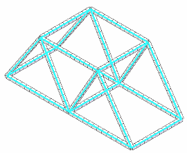
-
-
Solve the study—Select the Simulation tab→Solve group→Solve command.
After a few moments, the results are displayed in the Simulation Results environment.
-
Display beam cross section properties.
-
On the Simulation pane, expand the Geometry node.
-
Select a frame component for which you want to display the beam cross section.
Individual beams are highlighted in the graphics window as you hover over frame components in the Simulation pane.
-
Right-click and select the View Beam Properties command.

For information about this panel, see Beam properties.
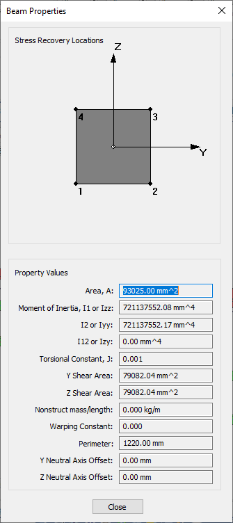
-
-
Display beam end reaction plots.
-
On the Home tab→Data Selection group, select:
Result Type=Beam End Reactions
Result Component=Beam Plane1 Moment.
-
The color bar header is turned off in this image.
-
The units for moment values in the image are newton meters.
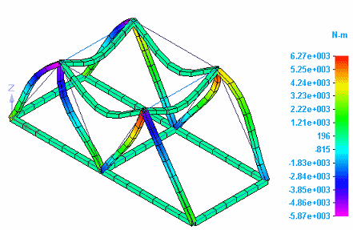
-
-
Change the Result Component list selection to Beam Pl1 Shear Force.
The units for shear force values in the image are millinewtons.
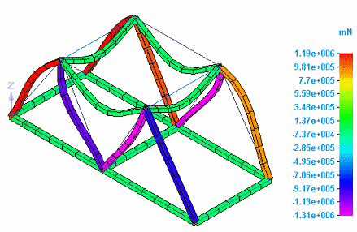
-
-
Display beam diagram plots for beam end reactions and stress.
-
Select the Home tab→Show group→Display Options command.
-
On the Display Options list, clear the Beam Cross Section check box, and select the Beam Diagram check box.
The beam diagram plot is displayed for Result Component=Beam Pl1 Shear Force.

-
On the Home tab→Data Selection group, change the following:
Result Type=Beam End Reactions
Result Component=Beam Plane1 Moment
The beam diagram plot for Result Component=Beam Plane1 Moment shows the bending moments.

-
On the Home tab→Data Selection group, change the following:
Result Type=Stress
Result Component=Beam Factor of Safety
 Note:
Note:To learn more about beam plots:
-
-
Close this file.